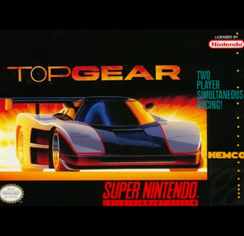

Top Gear
Top Gear, conhecido no Japão como Top Racer (トップレーサー Toppu Rēsā?), é um jogo eletrônico de corrida desenvolvido pela Gremlin Graphics e publicado pela Kemco para Super Nintendo Entertainment System (SNES) em 1992. É o primeiro jogo da série Top Gear.
O jogador corre em percursos espalhados por oito países, devendo chegar entre os cinco primeiros para alcançar o próximo nível. O desenvolvimento durou de três a cinco meses, com "vários momentos difíceis" e marcado pela documentação escassa do SNES. A trilha sonora foi feita em uma semana, sendo boa parte derivada da série Lotus Challenge. Em geral, Top Gear foi bem recebido pela crítica, citado como um jogo rápido e divertido e elogiado por seu modo multijogador, mas com críticas surgindo em relação aos gráficos. Internacionalmente, Top Gear foi esquecido, mas é reconhecido no Brasil, inspirando covers da trilha sonora e o jogo Horizon Chase, que traz o compositor original.